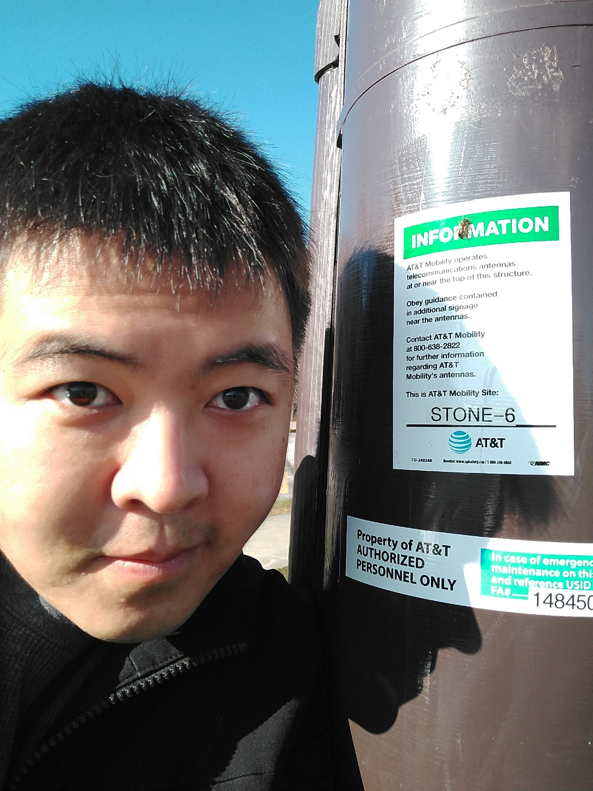

About me
Victor Yang is a challenger and enjoys learning. Even at an early age, Victor has been competting in a variety of different activites such as video games, sports, card games and acedemics.

Work and School History
Victor has worked in the service and tech workforce:
- Outside plant fiber infrastructure design - AT&T Fiber-to-the-Premise - 2018-2022
- Engineering Technician - AT&T 4G/5G CRAN: GA Team - 2019-2020
- Store Manager - Chick-Fil-A - 2014-2017
- Student for CS Major - GA Tech - 2008-2010
- Student for CS Major - Southern Polytechnic - 2006-2007

Personal
Recently married, Victor is looking for a change in carrer to support his family but is still on the look out for anything that could bring him back to compete.